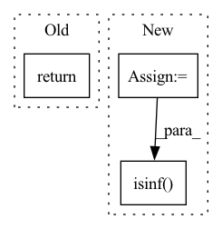

Pattern ID :3898
Before Change
y = G.y % 2
// return data objects needed for the network
return x, edge_index, y
def decision_function(self, G):
Predict raw anomaly score of X using the fitted detector.After Change
edge_index = G.edge_index
// via sparse matrix operation
dense_adj \
= SparseTensor(row=edge_index[0], col=edge_index[1]).to_dense()
// adjacency matrix normalization
rowsum = dense_adj.sum(1)
d_inv_sqrt = torch.pow(rowsum, -0.5).flatten()
d_inv_sqrt[torch.isinf( d_inv_sqrt) ] = 0.
d_mat_inv_sqrt = torch.diag(d_inv_sqrt)
adj = (dense_adj * d_mat_inv_sqrt).T * d_mat_inv_sqrt
In pattern: SUPERPATTERN
Frequency: 3
Non-data size: 3
Instances Fragment ID: 14767329
Project Name: pygod-team/pygod
Commit Name: 929c5b097a9b6f23790b09174ad9d59bb38e9e79
Time: 2022-03-31
Author: dingxueying15@gmail.com
File Name: pygod/models/ocgnn.py
M Class Name: OCGNN
N Class Name: OCGNN
M Method Name: process_graph(2)
N Method Name: process_graph(2)
M Parent Class: BaseDetector
N Parent Class: BaseDetector
M File Name: pygod/models/ocgnn.py
N File Name: pygod/models/ocgnn.py
M Start Line: 314
M End Line: 319
N Start Line: 317
N End Line: 333
Before Change
self.neg_weight = neg_weight
def forward(self, label, pos_score, log_pos_prob, neg_score, log_neg_prob):
return (1 - pos_score) + \
self.neg_weight * torch.sum(torch.relu(neg_score - self.margin), dim=1)
After Change
def forward(self, label, pos_score, log_pos_prob, neg_score, log_neg_prob):
// pos_score: [B,] or [B, N]
// neg_score: [B, num_neg] or [B, N, num_neg]
pos_score = torch.sigmoid(pos_score)
neg_score = torch.sigmoid(neg_score)
neg_score_mean = torch.mean(torch.relu(neg_score - self.margin), dim=-1) // [B] or [B,N]
notpadnum = torch.logical_not(torch.isinf( pos_score) ).float().sum()
loss = (1 - pos_score) + self.neg_weight * neg_score_mean
loss = torch.nan_to_num(loss, posinf=0.0)
return loss.sum() / notpadnum Fragment ID: 14767332
Project Name: ustcml/recstudio
Commit Name: d105308841df24997fabad0bcbe394d8ae46a729
Time: 2022-08-15
Author: angus_huang@mail.ustc.edu.cn
File Name: recstudio/model/loss_func.py
M Class Name: CCLLoss
N Class Name: CCLLoss
M Method Name: forward(6)
N Method Name: forward(6)
M Parent Class: PairwiseLoss
N Parent Class: PairwiseLoss
M File Name: recstudio/model/loss_func.py
N File Name: recstudio/model/loss_func.py
M Start Line: 152
M End Line: 153
N Start Line: 172
N End Line: 178
Before Change
deg_inv_sqrt = deg.pow(-1)
deg_inv_sqrt[deg_inv_sqrt == float("inf")] = 0
return deg_inv_sqrt[row], deg_inv_sqrt[col]
def forward(self, hg, h=None):
with hg.local_scope():After Change
return norm_H
def norm(self, g):
in_deg = g.in_degrees(range(g.number_of_nodes())).float()
norm = 1.0 / in_deg
norm[th.isinf( norm) ] = 0
g.ndata["norm"] = norm
g.apply_edges(fn.e_mul_v("w_sum", "norm", "w_sum"))
return g Fragment ID: 14767335
Project Name: bupt-gamma/openhgnn
Commit Name: 8016ba01e4b52c66fa9de0a944ddd043fa0d9b57
Time: 2021-05-24
Author: theheavenszhao@outlook.com
File Name: openhgnn/models/GTN_sparse.py
M Class Name: GTN
N Class Name: GTN
M Method Name: norm(2)
N Method Name: norm(6)
M Parent Class: BaseModel
N Parent Class: BaseModel
M File Name: openhgnn/models/GTN_sparse.py
N File Name: openhgnn/models/GTN_sparse.py
M Start Line: 61
M End Line: 74
N Start Line: 53
N End Line: 59